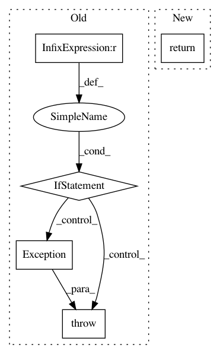

ac773ed243154c5408937122bb67f5ec754b29d5,keras/layers/embeddings.py,Embedding,get_output_mask,#Embedding#Any#,87
Before Change
if not self.mask_zero:
return None
else:
if K._BACKEND == "tensorflow":
raise Exception("Masking is Theano-only for the time being.")
return K.ones_like(X) * (1 - K.equal(X, 0))
@property
def output_shape(self):
After Change
if not self.mask_zero:
return None
else:
return K.expand_dims(K.not_equal(X, 0))
@property
def output_shape(self):
return (self.input_shape[0], self.input_length, self.output_dim)
In pattern: SUPERPATTERN
Frequency: 3
Non-data size: 5
Instances
Project Name: keras-team/keras
Commit Name: ac773ed243154c5408937122bb67f5ec754b29d5
Time: 2016-01-17
Author: xavier@whirlscape.com
File Name: keras/layers/embeddings.py
Class Name: Embedding
Method Name: get_output_mask
Project Name: keras-team/keras
Commit Name: ee8ff00a2a8a307c952fb8e7bef241188c7fb12b
Time: 2016-07-03
Author: francois.chollet@gmail.com
File Name: keras/backend/tensorflow_backend.py
Class Name:
Method Name: pool2d
Project Name: keras-team/keras
Commit Name: ff62eb251b04b8301e71aee970bdb157f2649fa9
Time: 2016-12-14
Author: francois.chollet@gmail.com
File Name: keras/regularizers.py
Class Name: WeightRegularizer
Method Name: __call__